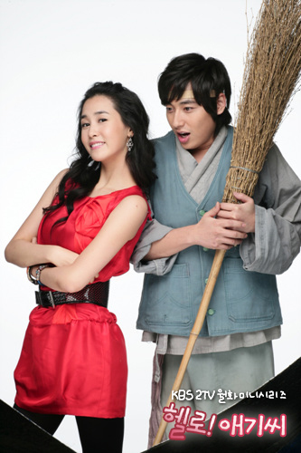
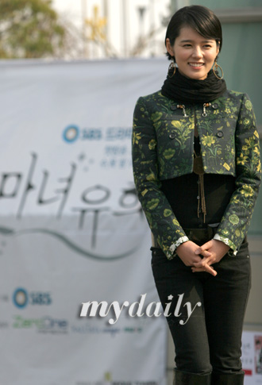

2007年韩剧之三月
3月15日，《达子的春天》播出了完结篇，而即将在3月下半旬上档的这些韩剧，当中又有哪部会像《达子的春天》一样吸引我们呢？
而3月似乎也是一个回归的季节，已嫁做人妇的韩佳仁、刚刚退伍的张赫还有好久不见的李多海，他们都带着自己的作品回到了我们的视野之中。
《顺其自然》
主 演：文政赫饰姜泰柱郑由美饰韩恩秀李奎汉饰申俊赫 尹知慧饰车惠琳
剧中描写的是四个对死去活来的爱情嗤之以鼻的男女主人公，他们认为说着伟大的爱情，爱人这样的人都很土。可在真爱中，自以为是的他们却被撞得浑身是伤……
这部电视剧借表现这些自认为很潇洒的年轻人陷入他们嘲笑的爱情中无法自拔的样子，让现实中或许也不屑的我们对爱情会有另外的理解。
《嗨，小姐》
主演：李多海 李志勋 夏石镇

李多海在剧中饰演忠佳仁华安堂的主人秀河，李志勋饰演下人出身的财阀孙子东奎，夏锡镇则饰演灿民，是一部以逃出宗家为主线的恋爱骗局连续剧。
告别了《MY GIRL》中的珠玉琳，李多海又会让我们看到一个怎样的她？
《魔女幼熙》
主演：韩佳仁 宰熙 金桢勋 丹尼斯.吴
全慧彬

该剧讲述的是，被称为“魔女”的某广告公司老板马幼熙（韩佳仁）和想当厨师的蔡戊龙（宰熙）的爱情故事。
该剧的主演韩佳仁和宰熙都有一年多没拍韩剧了，这次两人联手合作，会带给我们怎样的惊喜，让我们拭目以待；而且，金桢勋、丹尼斯.吴两大帅哥的加盟演出，更为该剧增色不少。
《谢谢》
主演：张赫 孔孝珍
以蓝岛为背景讲述了封闭了内心的出色医生闵基瑞(张赫饰)，与在艰辛的生活中依然怀抱着希望勇敢面对生活的李英辛(孔孝珍饰)，在交往中彼此间创造奇迹的故事。
张赫退伍后的第一部作品，随着一线男星的逐个回归，期待他们的精彩作品~